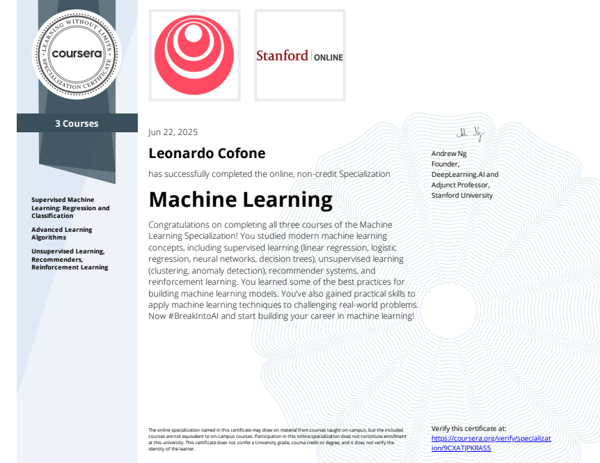
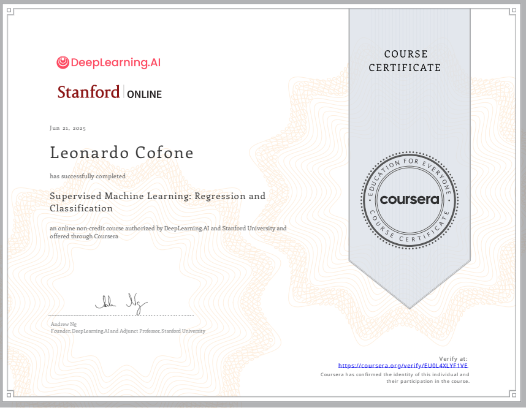
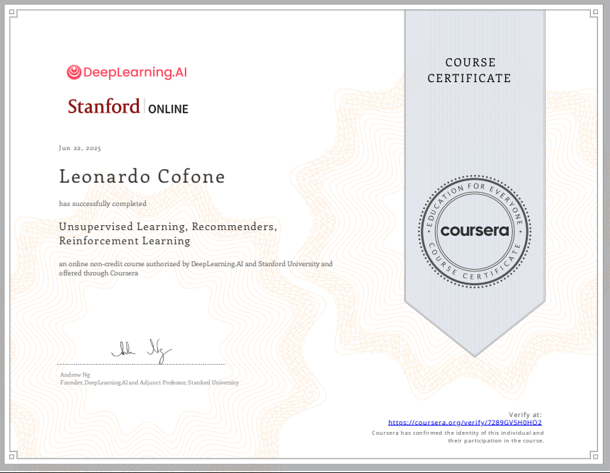
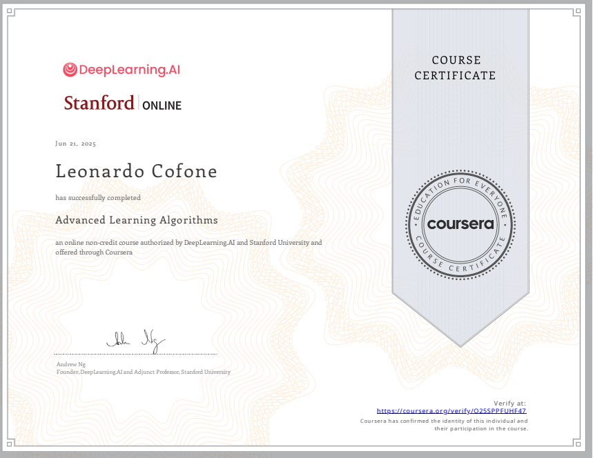
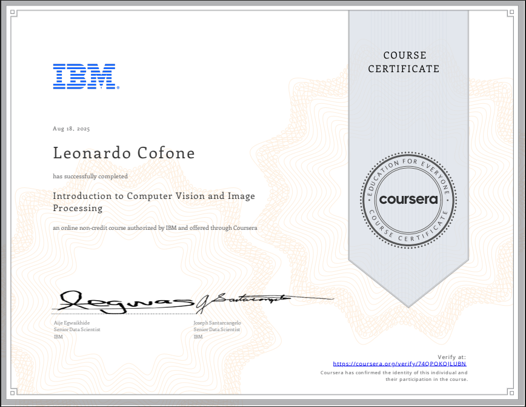
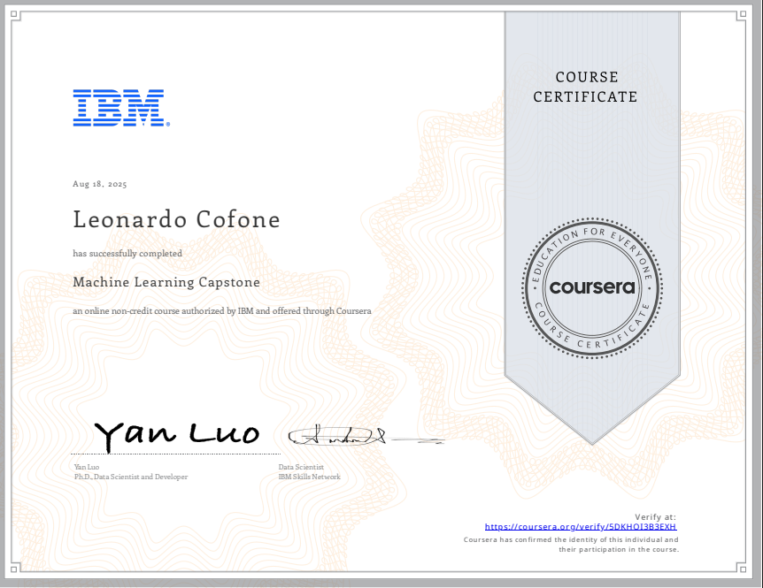
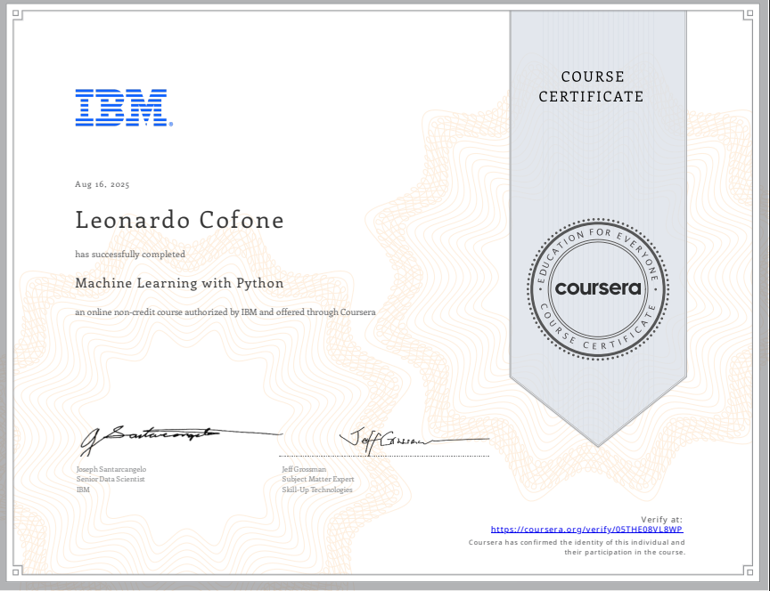
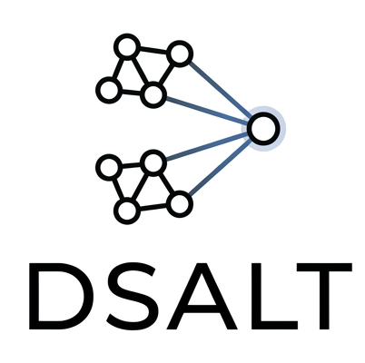

Leonardo Cofone
AI Researcher & Engineer | 17 years old | Deep Learning, Machine Learning, NLP & LLMs
Link Principali
PROFESSIONAL PROFILE
Through self-driven study, I have developed strong skills in Python programming and Artificial Intelligence. I have built and experimented with Machine Learning, Deep Learning, and NLP models, including computer vision systems, predictive analytics, and large language models. I enjoy building practical AI systems, working with both pre-trained and custom models, and developing intelligent agents capable of learning, reasoning, and solving real-world tasks. I have worked with both structured and unstructured data, applying AI to build real-world applications across different domains.
Show my full CV
WORK EXPERIENCES
-
AI Developer – EgoLog S.r.l. (August 2025 – February 2026, 7 months)
Designed, developed, and deployed AI agent systems using n8n to automate workflows and repetitive business processes. Improved operational efficiency by integrating practical AI solutions into client systems. -
AI Developer – Top Evolution Srl (June 2025 – August 2025, 3 months)
Worked on AI automation projects for businesses, designing and optimizing machine learning pipelines and integrating models into real-world workflows to improve efficiency and performance. - Developed multiple personal AI projects, including deep learning models for computer vision, predictive analytics, and natural language processing, demonstrating hands-on experience across both research and applied AI.
EDUCATION AND LEARNING
- Currently studying at Galileo Galilei Scientific High School, Trento – Expected graduation: June 2028
- Actively expanding my knowledge in Artificial Intelligence through hands-on projects, online specializations, advanced courses, competitions, and AI-related books.
- See below for a detailed list of completed certifications and courses.
COMPUTER SKILLS
Programming: Python (advanced), C++ (basic). Web: HTML, CSS, JavaScript (basic).
Artificial Intelligence & Machine Learning: Hands-on experience with supervised and unsupervised learning, deep learning, computer vision, predictive modeling, and natural language processing. Experience in building AI systems and LLM-based applications using both pre-trained and custom models.
Relevant Projects & Applications: Developed machine learning pipelines for classification, regression, clustering, and data analysis tasks. Built neural network models for computer vision and NLP applications, and experimented with LLM-based systems and AI agents using prompt engineering. Applied these techniques in personal projects, competitions, and real-world datasets, focusing on model evaluation and performance improvement.
CERTIFICATIONS
Certifications in Machine Learning, Deep Learning, Computer Vision, and NLP, focused on both theoretical foundations and hands-on implementation using real-world datasets.

Machine Learning Specialization
Andrew Ng - Stanford University, 94h
Foundations of supervised and unsupervised learning with practical implementation in Python.

Supervised Machine Learning
Andrew Ng - Deep Learning, 33h
Core concepts in regression, classification, and evaluation metrics.

Unsupervised ML, RL, Recommenders
Andrew Ng - Deep Learning, 27h
Clustering, recommender systems, and reinforcement learning fundamentals.

Advanced Learning Algorithms
Andrew Ng - Deep Learning, 34h
Neural networks, optimization, and regularization techniques.

Computer Vision & Image Processing
IBM, 22h
Image processing, detection, and classification using OpenCV.

Machine Learning Capstone
IBM, 20h
End-to-end machine learning pipeline on real-world datasets.

Machine Learning with Python
IBM, 20h
Model development using Python and scikit-learn.
PROJECTS
Here are some of my recent AI projects. More work available on my GitHub and Kaggle profiles.

DSALT
Research Project · Transformer ArchitecturesResearch on sparse attention mechanisms for improving long-context Transformer efficiency and representation quality.
See more
DSALT: Dynamic Sparse Attention with Landmark Tokens DSALT is a research project on Transformer attention mechanisms that investigates the structural limitations of dense self-attention in long-context settings. In particular, it analyzes how uniform softmax weighting can lead to cumulative representational noise and progressive homogenization of token embeddings across layers. To address this, DSALT introduces a dynamic sparse attention mechanism that combines local windowed attention with globally selected landmark tokens. Landmark selection is performed using a hybrid energy-based scoring function that balances representational magnitude and output relevance. The objective is to reduce redundant token interactions while preserving long-range dependencies, improving both representational quality and computational efficiency. The project also explores the relationship between attention structure, rank dynamics, and information flow in deep neural networks.
LerriAI
AI Assistant · LLM · ProductivityA powerful personal AI assistant to help you organize your life, manage everything with ease. (Currently offline)
See more
LerriAI is built around a simple idea: most people don’t lack ability, they struggle with organization. Life throws countless tasks, deadlines, emails, routines, goals, and unexpected problems at us, and even the most motivated individuals can easily feel overwhelmed. LerriAI exists to manage that complexity. It is not just a chatbot or a simple assistant, it is a living system of intelligent agents that work together to structure your day, support your decisions, and keep your personal world running smoothly. Each agent has a specific role, analyzing your habits, priorities, and preferences, planning, reminding, optimizing, summarizing, and tracking progress, while communicating through a shared intelligence layer. In this way, LerriAI turns chaos into order, complexity into clarity, and everyday distractions into focused, actionable guidance, helping you stay on track with what truly matters.